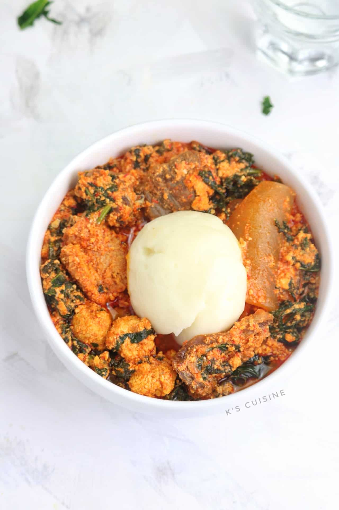

Pounded Yam and Egusi Soup

Description
A classic combination featuring smooth, stretchy pounded yam paired with a rich,
nutty soup made from ground melon seeds (egusi), leafy greens, and fish or meat.
A hearty and traditional meal.
Ingredients
- Yam
- Egusi (melon seeds)
- Spinach/bitter leaf
- Palm oil
- Stock cubes
- Fish/meat
- Peppers
- Onions
- Salt
Steps
Steps to Prepare Pounded Yam and Egusi Soup
- Cook Yam: Boil yam, then pound until smooth.
- Prepare Soup: Fry onions, peppers, and egusi in palm oil
- Add Protein: Add fish/meat, stock cubes, and water. Simmer.
- Add Greens: Stir in spinach/bitter leaf.
- Serve: Pair with pounded yam.
Done!
Home